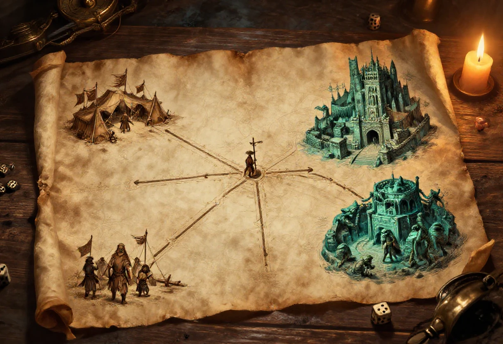

Au bas de la page qui rassemblait mes scénarios, il restait trois titres. Trois idées que je n'ai jamais rédigées, et une phrase que je peux citer de mémoire : je ne sais vraiment pas quand j'aurai le temps de les écrire, vraiment pas. Les années ont passé, le temps n'est jamais venu, et les trois titres sont restés là, alignés comme des portes fermées.
Je ne vais pas faire semblant de les avoir retrouvés. Il n'existe ni actes, ni dialogues, ni plans pour ces trois pistes. Ce chapitre est donc différent des précédents : ce n'est pas la mise au propre d'un scénario ancien, c'est ce que je ferais de ces trois idées aujourd'hui, avec le recul, les personnages et les événements des chapitres VIII à XI. Prenez-le comme un carnet d'idées, pas comme un scénario prêt à jouer.
Le premier titre est le plus ancien dans ma tête, et le plus ambitieux : le camp barbare du prince démon. Il devait être la suite directe du squelette enfoui. Azefhfkrijiiir est libre, ou sur le point de l'être, et il marche vers le camp barbare qui l'attend au-delà des terres de Samarande. Ce camp n'est pas une horde : c'est une cour. Des tribus humaines, des gouris, des renégats de toutes les cités y viennent chercher une place, une faveur ou une vengeance, et le prince démon distribue les trois.
Trois façons de le jouer, et je les propose sans en choisir une.
| Version | Le camp | Ce que font les personnages |
|---|---|---|
| La guerre | Un camp de mobilisation, des forges, des enclos, des tribus qui ne parlent pas la même langue et un chef qui les tient par la peur. | Ils s'infiltrent, sabotent les forges, libèrent des prisonniers ou préviennent Samarande. C'est la version la plus proche d'un scénario d'action. |
| La cour | Un palais de toile et de bois, des audiences, des cadeaux, des trahisons, et un trône qui n'est pas encore occupé. | Ils négocient, mentent, montent les factions les unes contre les autres. C'est la version politique, et la plus dangereuse pour les personnages. |
| Le pèlerinage | Un lieu saint pour ceux qui croient au démon, avec des prêtres, des offrandes, des malades qui viennent guérir et des enfants qu'on amène. | Ils cherchent quelqu'un dans la foule, ou ils découvrent que le camp n'est pas une armée mais une religion. C'est la version la plus étrange. |
Le prince démon, lui, n'a pas besoin d'être présent tout de suite. Il peut être une voix, un rêve, un vide au centre du camp. Si les personnages l'ont affronté au chapitre VIII, ils savent à quoi il ressemble, et le meneur peut jouer sur cette reconnaissance. S'ils ne l'ont pas affronté, le camp est une rumeur qui devient une menace.
| Faction | Ce qu'elle veut | Ce qu'elle cache |
|---|---|---|
| Les tribus humaines | Des terres, du bétail et le droit de rester elles-mêmes. | Elles ne croient pas au démon. Elles l'utilisent comme un chef de guerre, et elles comptent le trahir dès qu'il aura pris Samarande. |
| Les gouris ralliés | Une revanche sur les cités qui les ont chassés. | Ils sont divisés entre ceux qui veulent brûler Samarande et ceux qui veulent y rentrer par la porte principale. |
| Les prêtres | Un temple, des fidèles et le contrôle du rituel. | Ils ne savent pas tous ce qu'ils adorent. Certains croient servir un dieu, d'autres savent qu'il s'agit d'un démon et s'en moquent. |
| Les renégats des cités | Une position, de l'argent, une protection. | Ils sont les informateurs les plus fiables du camp, et les plus prompts à changer de camp. |
Le deuxième titre est une scène, pas une campagne : le contrôle d'entrée à choix. L'idée est simple. Les personnages doivent entrer dans une ville, et la porte est gardée. Ils n'ont pas les papiers, ou pas les bons, ou pas l'argent du péage. Trois personnes peuvent les faire passer, et chacune demande quelque chose de différent. Le choix qu'ils font au seuil décide de la suite de la soirée.
La scène se joue en trois temps. D'abord la file, la chaleur, les cris, le garde qui prend son temps. Ensuite le face-à-face, avec la personne choisie. Enfin le passage, qui n'est jamais propre : un regard, une main sur une épaule, une porte qui s'ouvre trop vite.
| Passage | Ce qu'il demande | Ce qu'il coûte |
|---|---|---|
| Le garde | Un service : porter un colis, témoigner d'une bagarre, oublier ce qu'on a vu. | Les personnages entrent avec une dette envers la garde, et la garde le sait. |
| Le contrebandier | De l'argent, ou une part de ce qu'ils transportent. | Ils entrent par un passage que la milice surveille, et quelqu'un les a vus. |
| Le prêtre | Une confession, une offrande, ou la promesse d'assister à un office. | Ils entrent avec un secret entre les mains d'un homme qui en collecte. |
Le meneur peut ajouter une quatrième option : ne pas entrer. Les personnages rebroussent chemin, dorment dans les faubourgs, et la ville reste fermée. Ce n'est pas un échec, c'est une autre histoire, et elle vaut souvent mieux que la première.
Cette piste peut servir de prologue à n'importe quel scénario des chapitres VIII à XI. Elle peut aussi être une scène isolée entre deux campagnes, pour rappeler que Samarande n'est pas un lieu accueillant. Je la garde parce qu'elle ne demande rien : pas de plan, pas de monstre, pas de trésor. Juste une porte et trois personnes.
Le troisième titre est le plus ancien du monde de Samarande. Kalaar est une cité souterraine fondée par les nains dans les Monts Ocres, abandonnée il y a longtemps quand les hélodermes, des êtres mi-hommes mi-reptiles, l'ont envahie. Les nains sont partis, les reptiles sont restés, et la cité est devenue l'un de ces lieux dont on parle sans jamais y aller.
Le fichier d'origine ne dit rien de plus. Alors voici trois façons d'y aller.
| Aventure | L'accroche | Ce qu'on y trouve |
|---|---|---|
| La mine perdue | Un nain veut récupérer les outils de son grand-père, restés dans un atelier abandonné. Il paie bien, et il ment sur la raison. | Un quartier artisanal intact, des machines qui tournent encore, et des hélodermes qui ont appris à s'en servir. |
| L'œuf | Un marchand achète des œufs d'héloderme, très recherchés pour leurs vertus. Il en veut un, vivant. | Une nursery sous la ville, des gardiens, et une mère qui n'a pas besoin de parler pour se faire comprendre. |
| Le retour | Une expédition naine veut reprendre la cité. Elle a des cartes, des armes et aucune idée de ce qui l'attend. | Une guerre souterraine, des alliances impossibles, et la question de savoir si Kalaar appartient encore à ceux qui l'ont fondée. |
Kalaar n'est pas un donjon à nettoyer. C'est une ville, avec des quartiers, des fontaines, des temples et des tombes. Les hélodermes y vivent depuis des générations, et ils ont leurs propres coutumes. Un meneur qui les traite comme des monstres de rencontre passe à côté de la meilleure partie : la cité est habitée, et elle a des habitants qui ne sont pas contents de voir revenir les anciens propriétaires.
Si je devais écrire cette campagne aujourd'hui, je commencerais par la mine perdue, je ferais de l'atelier un lieu sûr, puis je descendrais vers la nursery et le temple noyé. La fin ne serait pas une bataille rangée mais un choix : rendre la cité aux nains, la laisser aux hélodermes, ou la partager. Les personnages sont des voleurs, pas des rois, et c'est justement ce qui rend le choix intéressant.
Je garde les trois titres, parce qu'ils disent quelque chose de la façon dont je travaillais : une idée, un lieu, une scène, et puis on verra. Je jette l'idée qu'un scénario doit être complet pour être joué. Ces trois pistes tiennent en une page chacune, et une page suffit pour une soirée si le meneur a envie de la remplir.
Je garde aussi le principe du choix. Le contrôle d'entrée, le camp et Kalaar ont un point commun : à chaque fois, les personnages doivent décider à qui ils font confiance, et à chaque fois, la mauvaise réponse est plus intéressante que la bonne. C'est probablement ce que je cherchais en 1999 sans savoir le formuler.
Ne préparez pas ces pistes comme des scénarios. Préparez une scène, trois personnes et un lieu, puis laissez la table faire le reste. Si les joueurs accrochent, vous aurez le temps d'écrire la suite entre deux séances. S'ils n'accrochent pas, vous n'aurez pas perdu trois semaines de travail.
Le camp barbare demande une carte et des factions. Le contrôle d'entrée demande une porte et trois visages. Kalaar demande une coupe de la cité et une idée de ce qui vit dedans. Dans les trois cas, le meneur doit savoir ce qui se passe si les personnages ne font rien : le camp avance, la porte se ferme, les hélodermes prolifèrent. Le monde n'attend pas.
Enfin, ne promettez pas aux joueurs une campagne que vous n'avez pas écrite. Dites-leur que ce sont des pistes, des portes entrouvertes, et que la suite dépendra d'eux. C'est plus honnête, et c'est aussi plus excitant.
Trois titres retrouvés au bas de la page « Mes scénarios » du site de l'auteur, rédigée en 1999 : « Le camp barbare du prince démon Azefhfkrijiiir », « Esclavagisme gouri sans vergogne » et, pour n'importe quelle équipe, « Contrôle d'entrée à choix » et « Aventures à Kalaar ». Les deux premiers sont devenus les chapitres VIII et IX ; les trois pistes de ce chapitre n'ont jamais été rédigées. La présente version est donc une proposition de 2026, pas la restauration d'un texte ancien : elle reprend les titres, le contexte de Samarande et les créatures déjà décrites dans les chapitres I et VIII, et développe chaque piste en une page de jeu. Aucun texte de tiers n'est reproduit. Version provisoire : ces pistes n'ont jamais été testées en table.